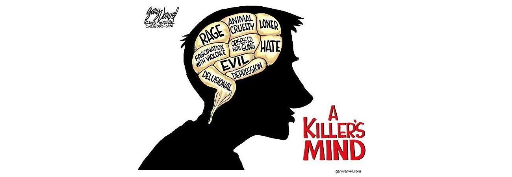
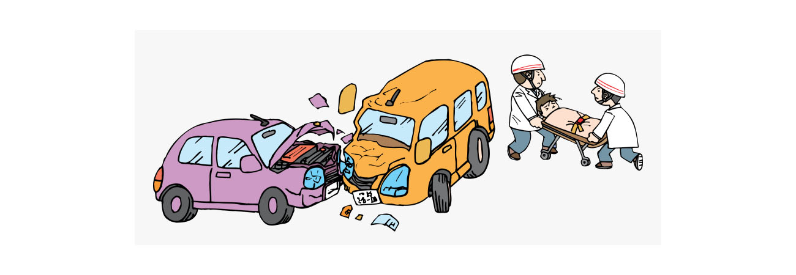

El robo se define a menudo como la sustracción no autorizada de los bienes de otra persona con la intención de privarla permanentemente de ellos. El elemento de sustracción en un robo normalmente requiere tomar posesión de un bien que pertenece a otro y también implica quitar o intentar quitar el bien.
El asesinato consiste básicamente en matar a un individuo, por tanto, es que se trata de un delito contra la vida, generalmente practicado con alevosía, ensañamiento y con premeditación, pueden existir de varios tipos, algunos más agravantes que otros.
La alteración del orden público es un delito penal que ocurre cuando una persona participa en algún tipo de conducta escandalosa, tal como peleas o amenazas de peleas en público, ruidos excesivamente altos, gritos, música a alto volumen o incluso permitir que un perro ladre durante largos períodos de tiempo. Cuando las palabras o la conducta de una persona ponen en peligro el derecho de los demás de gozar de paz y tranquilidad, pueden acusarla de alteración del orden público.
Un accidente de tránsito es aquel acontecimiento producido entre uno o más vehículos y/o peatones, sea de forma dolosa o culposa, con consecuencia de lesiones y daños para las personas y bienes involucrados en él.
La violencia doméstica es un tipo de abuso. Por lo general, implica un cónyuge o pareja, pero también puede ser un niño, pariente mayor u otro miembro de la familia. La violencia doméstica puede incluir diferentes tipos de abuso, como: Violencia física, violencia sexual, abuso emocional, abuso económico y acoso o acecho.
Al estar fuera de la comodidad y seguridad de nuestros hogares, nos exponemos a muchos peligros. Podemos evitar ser el blanco de antisociales si seguimos los siguientes consejos.
* Tener la mochila al frente del cuerpo tanto en la calle como en transporte público.
* No hablar por celular en la calle, a menos que sea estrictamente necesario.
* Fijarse en el entorno, personas que te puedan estar observando o siguiendo. Trata de no alejarte del público o entrar a un establecimiento para disuadir.
Uno de los mayores miedos de los dueños de casa, es saber si es lo suficiente segura para evitar que los antisociales irrumpan en sus hogares. Los siguientes consejos pueden ayudarte.
*Si sales de casa, asegúrate de evitar comentar a desconocidos sobre tu ausencia.
* Asegúrate de cerrar puertas y ventanas, usar candados en cada puerta si es posible.
* Fijarse en el entorno, personas que te puedan estar observando o siguiendo. Trata de no alejarte del público o entrar a un establecimiento para disuadir.
*Controla lo que subes a las redes sociales, ya que es una fuente de información para los delincuentes.
*Se le recuerda a la ciudadanía que en caso de sentirse en peligro inminente o en caso de no sentirse en capacidad de defenderse, las únicas recomendaciones serán ocultarse, no mostrar resistencia hacia agresor, intentar comunicarse con el equipo de emergencia y esperar la ayuda.*
Las armas contundentes son aquellas armas que al ser usadas para atacar causan contusiones o golpes.
Ejemplos de este tipo son los bates, palos, tubos, martillos, mazos, etc.
Las armas contundentes poseen su mayor fuerza de impacto en el extremo exterior por lo que existen 2 estrategias contra esta arma. De forma defensiva lo importante es mantener la distancia y alejarse del agresor manteniendose fuera del rango del arma. De manera mas ofensiva se puede buscar acortar al maximo la distancia entre el agresor y usted para poder apropiarse del arma.
*Se le recuerda a la ciudadanía que en caso de sentirse en peligro inminente o en caso de no sentirse en capacidad de defenderse, las únicas recomendaciones serán ocultarse, no mostrar resistencia hacia agresor, intentar comunicarse con el equipo de emergencia y esperar la ayuda.*
Las armas blancas son aquellas armas que al ser usadas para atacar causan cortes o punzadas.
Ejemplos de este tipo son los cuchillos, navajas, estiletes, machetes, etc.
Las armas blancas no requieren de mucho esfuerzo para causar daños, basta con entrar en contacto o usar movimientos veloces para causar heridas. Es necesario mantener la calma,a en todo momento para no alterar al agresor ni levantar sospechas.
De ser posible, analizar los alrededores de forma discreta manteniendose fuera del rango del arma para determinar si es posible escapar o si la unica opcion es ceder ante el agresor y esperar ayuda.
*Se le recuerda a la ciudadanía que en caso de sentirse en peligro inminente o en caso de no sentirse en capacidad de defenderse, las únicas recomendaciones serán ocultarse, no mostrar resistencia hacia agresor, intentar comunicarse con el equipo de emergencia y esperar la ayuda.*
La Fiscalía no sugiere ni aprueba oponer resistencia alguna contra un agresor en posesión de un arma de fuego. Se sugiere firmemente que mantenga la calma y espere la ayuda debida.